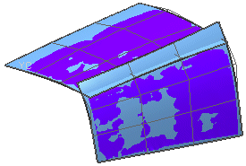
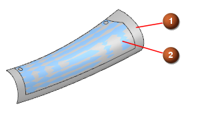

扩大概述
扩大概述
使用扩大命令，可以创建与所选修剪或未修剪片体或面关联的 4 边曲面特征。通过拖动手柄或者为四边键入 U 和 V 百分比值，可以更改此特征的大小。
当使用片体创建模型时，建造较大的片体是一个良好的习惯，这可以消除下游实体建模的问题。在使用扩大命令执行此操作时还可以保持片体的当前参数。您还可以使用这一命令来减小片体的大小从而实现其他目的，例如移除退化边。
只能选择一个修剪或未修剪片体的面，这个面可以是参数化的，也可以是非参数化的，它可以是一个片体，也可以是一个实体。

|
 |
由于扩大的重新调整大小参数仅影响扩大特征的四边形式，因此执行此操作后的形状不会与原始曲面的完整外形或其边数完全相同。
|
位于何处？
|
应用模块 |
建模 |
|
工具条 |
编辑曲面 →扩大 |
|
菜单 |
编辑→曲面→扩大 |